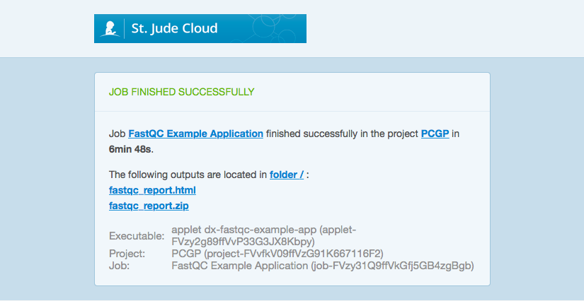

Creating a Cloud Application¶
Info
If you came here from the remote work quickstart guide, you can use this link to quickly jump back to your place in that guide.
This guide will take you through the process of writing an application for working with and manipulating the St. Jude data you've requested. By creating your own application, you will be able to wrap genomic tools and packages from external sources, as well as any tool or application you might have written yourself.
Tip
The complete contents of this guide is hosted on the St. Jude App Tutorial repository on GitHub. Feel free to clone the repository and use it as a reference while following this tutorial or try building the application and running it on your own project.
Overview¶
The biggest difference between running an application in the cloud (as opposed to running it in a local environment) is the way we access that data and manipulate it. Writing and running your own cloud application grants numerous benefits. It allows you to submit numerous jobs in parallel, access your data from anywhere with an Internet connection, and utilize resources and compute power at a fraction of the cost (when compared to building your own infrastructure).
Writing your own application will allow you to wrap custom tools to manipulate any data that you have previously requested. When you run your application, the request gets sent to a virtualized Linux container (Ubuntu 14.04 or 16.04) where any dependencies are installed and where your script will be run. Any tools or packages that you include (either through the included package managers, or bundled together in your project) will be available locally on the virtual Linux machine.
However, there are differences in how we manage our data. When a job is submitted, a virtual machine is provisioned specifically for that job request, meaning that it is spun up at-will or when needed. It also implies that once the job has completed, the virtual machine will be reprovisioned or deleted. Any job output or data must be uploaded back to the project space.
In this tutorial, we will be wrapping the FastQC, a quality control tool for raw sequence data, into our application. This will allow us to run FastQC on any of the St. Jude next generation sequencing data in the cloud. For specific information about how FastQC works, please refer to the FastQC documentation.
Data¶
For this tutorial I have requested the PCGP dataset, and once my access request has been approved, my project directory space will look like the following.

Note
If you do not yet have data in a DNAnexus project, you may request data from St. Jude Cloud by following the directions here or you may upload your own data using the data transfer app. In order to make a data request or upload your own data using the data transfer app, you must first create a St. Jude Cloud account.
Writing the Application¶
Requirements¶
| Tool | Download | Website | Version |
|---|---|---|---|
| dx-toolkit | Source | DNAnexus | v0.291.1 |
| FastQC | Source | Babraham Bioinformatics | v0.11.8 |
Installing the dx-toolkit requires Python to be installed locally. Using the system provided version of Python can be problematic for a number of reasons, so we recommend using the Anaconda environment manager to install Python.
You can view the following guides for how to install conda on your system.
- Windows. https://docs.anaconda.com/anaconda/install/windows/
- Mac OS. https://docs.anaconda.com/anaconda/install/mac-os/
- Linux. https://docs.anaconda.com/anaconda/install/linux/
Once you have conda installed, run the following commands to create a new environment with Python, activate it, and install the dx-toolkit.
conda create -n dx python=3.7
conda activate dx
pip install dxpy
Now whenever you want to develop something for the cloud using dx-toolkit, just open your terminal and type conda activate dx.
To access your DNAnexus projects from the commandline, you must login using dx-toolkit.
For users not affiliated with St. Jude, simply type dx login and enter your username and password when prompted.
Users with a St. Jude account will need to generate an API token for authentication.
Instructions can be found here.
Getting started¶
The easiest way to install dx-toolkit is through pip, the Python package manager. Simply run the following command in your terminal:
pip install dxpy --upgrade
For this application, we will be using the dx-app-wizard command that is included in the dx-toolkit. dx-app-wizard is an interactive prompt that creates a boilerplate project that will allow you to quickly create an application. For more on dx-app-wizard, refer to the DNAnexus wiki article on Intro to Building Apps. Before continuing, be sure to refer to the command line interaction page for a walkthrough on how to install dx-toolkit and how to select your project workspace.
Tip
It is not necessary to use dx-app-wizard. All the necessary files and project directory structure can be created manually. However, dx-app-wizard provides a quick and easy way to get started. For more information, refer to the Advanced App Tutorial.
All DNAnexus project applications will have the following structure:
dx-fastqc-example-app/
├── dxapp.json
├── resources/
│ └── usr/
│ └── bin/
└── src/
└── dx-fastqc-example-app.sh
The dxapp.json file is a JSON file that contains metadata about the application we are writing that are needed to build and run the app on the DNAnexus Platform. Most notably, you will need to specify all of the inputs your app requires (both input files or any settings you can tune), output files, and other options such as the number of cores and memory required to run the tool. To see the full list of fields, refer to the DNAnexus wiki guide on the application metadata.
The dx-fastqc-example-app.sh file is a bash script is what will be executed when the application is run. Any executable binaries that accompany the application, such as other tools or scripts, are placed in the resources folder. From there, we can call the executable from within the app when it is run.
Creating the Project¶
Start by running the dx-app-wizard command from your terminal.
Info
This helper tool will create a local directory on your machine. Any code changes we make will be done inside this local project directory created by dx-app-wizard. This is because we can write our application locally, build the application, and then run the application in the cloud.
Building the application will compile dx-fastqc-example-app and then upload it into the project space on the cloud. When we run an application, it will be submitted as a job to be run in the cloud. With this process, we can write the application locally and run it on our data in the cloud, without ever having to utilize personal bandwidth and compute time.
$ dx-app-wizard
For our inputs, we will enter the following:
$ App Name: dx-fastqc-example-app
...
$ Title []: FastQC Example Application
...
$ Summary []: Uses FastQC to generate quality control reports on raw sequence data.
...
$ Version [0.0.1]: 0.0.1
...
$ 1st input name (<ENTER> to finish): bam_file
$ Label (optional human-readable name) []: BAM File
...
$ Choose a class (<TAB> twice for choices): file
$ This is an optional parameter [y/n]: n
...
$ 1st output name (<ENTER> to finish): fastqc_html
$ Label (optional human-readable name) []: FastQC HTML Report
$ Choose a class (<TAB> twice for choices): file
$ 2nd output name (<ENTER> to finish): fastqc_zip
$ Label (optional human-readable name) []: FastQC Zip File
$ Choose a class (<TAB> twice for choices): file
...
$ Timeout policy [48h]: 48h
...
$ Programming language: bash
...
$ Will this app need access to the Internet? [y/N]: N
...
$ Will this app need access to the parent project? [y/N]: y
...
$ Choose an instance type for your app [mem1_ssd1_x4]: azure:mem1_ssd1_x4
Tip
Although our app doesn't need any Internet access in this example, it may be required for your project. Also be sure to check what instance type you will need in the API Specifications.
The FastQC executable supports a variety of file formats (BAM, SAM, FastQ, etc.), and outputs a HTML report and a zip file that contains all the graphs and data. We will use that knowledge to write the input and output parameters for our application. We can also specify other parameters such as the timeout policy, programming language, and instance type. For more information, refer to the IO and Run Specification guide.
Integrating Tools and Packages¶
Once we have finished creating the basic FastQC application using dx-app-wizard, the project structure should look like:
dx-fastqc-example-app/
├── Readme.developer.md
├── Readme.md
├── dxapp.json
├── resources/
├── src/
│ └── dx-fastqc-example-app.sh
└── test/
Info
Anything in the resources folder is unpacked into the root directory (/) of the virtual Linux machine that your application will run on. If we create the directory path dx-fastqc-example-app/resources/usr/bin/, anything in the bin folder would be unpacked into /usr/bin/ on the Linux machine. This is handy because that path is included in the default $PATH environment variable.
Your application's executable will use /home/dnanexus/ as its current working directory.
Though dx-app-wizard does not create this, we can create it ourselves. Paste the following lines into your terminal.
$ mkdir -p dx-fastqc-example-app/resources/usr/bin
Packaging FastQC¶
To incorporate FastQC into this project, we need to download the executable binary and package it within the dx-fastqc-example-app. Download the FastQC v0.11.8 (Win/Linux zip file) and unzip it. After unzipping, move the FastQC folder into the resources folder.
$ unzip fastqc_v0.11.8.zip
$ mv FastQC /path/to/project/dx-fastqc-example-app/resources/
Now, our project will look like this:
dx-fastqc-example-app/
├── LICENSE
├── README.md
├── Readme.developer.md
├── dxapp.json
├── test/
├── resources/
│ ├── FastQC/
│ │ ├── fastqc
│ │ └── ...
│ └── usr/
│ └── bin/
└── src/
└── dx-fastqc-example-app.sh
Installing Dependencies¶
Tip
If you are importing custom tools, or are using tools that rely on various packages and requirements, they can be specified in the "runSpec".
For more information on installing dependencies and available software packages, refer to the Execution Environment Reference.
Some external package managers that we can leverage when building an app include:
| Package Manager | Application |
|---|---|
| APT | Advanced Packaging Tool for Ubuntu |
| CPAN | Comprehensive Perl Archive Network |
| CRAN | Comprehensive R Archive Network |
| gem | Package Manager for Ruby |
| pip | PyPI (Python Package Index) |
One requirement for FastQC is that it must have a suitable Java Runtime Environment. To include this in the app, we have to edit the dxapp.json file. Open dxapp.json and append the following line to "runSpec":
"execDepends": [
{"name": "openjdk-7-jre-headless",
"package_manager": "apt"}
]
Be sure to add a comma at the very end of the "file" object line to accommodate the new "execDepends" lines. Now, the "runSpec" object should look like the following:
...
"runSpec": {
"timeoutPolicy": {
"*": {
"hours": 48
}
},
"interpreter": "bash",
"release": "14.04",
"distribution": "Ubuntu",
"file": "src/dx-fastqc-example-app.sh",
"execDepends": [
{"name": "openjdk-7-jre-headless",
"package_manager": "apt"}
]
},
...
When you build and run your application, the virtual environment will now download openjdk-7 from Ubuntu's APT package manager as a prerequisite. For more information on how to specify packages from Git, R, or Python, refer to the Software Packages wiki page.
Calling FastQC¶
The last step is to call the FastQC executable from within the app. Open up src/dx-fastqc-example-app.sh with a text editor. Inside this Bash script is where we will be working with FastQC and our data. Before we dive in, its a good idea to add a few useful parameters for the script execution.
Right after the Bash shebang (#!/bin/bash), add the following line:
set -e -x
Below is a table describing what each flag does:
| Flag | Description |
|---|---|
| -e | Exit immediately if a command exits with a non-zero status. |
| -x | Print each command to standard error before execution. |
Our first change has to do with how our BAM file is downloaded. Although dx-app-wizard automatically generates a line that will download the input file and rename it, we want to keep the original file name because FastQC uses the input file as part of the report name. Remove the -o bam_file portion so the line looks like the following:
dx download "$bam_file" # Downloads our input BAM file without renaming
After the application downloads the input file, we need to create the appropriate output directories and run FastQC on our BAM file. Add the following lines to the bash script within the main function:
mkdir ~/fastqc-out/ # FastQC Output Folder
/FastQC/fastqc "$bam_file_name" -o ~/fastqc-out # Runs FastQC on BAM File
Tip
Be sure to use "$bam_file_name" as our input for FastQC. Using "$bam_file" only returns the DNAnexus file-id associated with the input file.
For more information on helper variables, refer to the Advanced App Tutorial.
Uploading Files¶
After FastQC finishes, the last thing to do is to upload the reports generated by FastQC to our project. These virtual Linux machines are provisioned at-will, meaning that they are only spun up when a job is submitted. When we create an application and run it in the cloud, we submit it as a job to be executed. When a job gets executed, a virtual machine will download all the necessary requirements (tools, packages, data, etc.) and run the job. Any output files on the machine must be uploaded back to the project space after a job finishes executing. Any information and data not uploaded to the project space will be inaccessible and lost.
You will see two lines generated for us by dx-app-wizard when we specified the outputs for our application. We need to change these to upload the correct files from our output directory that we specified for FastQC. Otherwise, it assumes they are in the home directory. Before this, we can also (optionally) rename the files to be uploaded. Add the following lines, making sure to replace the two original upload lines.
Lines to remove/overwrite:
# Generated by dx-app-wizard
fastqc_html=$(dx upload fastqc_html --brief)
fastqc_zip=$(dx upload fastqc_zip --brief)
Lines to add:
# (Optional) Renames the FastQC reports
mv ~/fastqc-out/*.html ~/fastqc-out/fastqc-report.html
mv ~/fastqc-out/*.zip ~/fastqc-out/fastqc-report.zip
# Uploads the respective HTML and Zip file (lines to change)
fastqc_html=$(dx upload ~/fastqc-out/fastqc-report.html --brief)
fastqc_zip=$(dx upload ~/fastqc-out/fastqc-report.zip --brief)
In this step, we are also moving the HTML and Zip file generated by FastQC to the directories which will be uploaded.
After this step, dx-fastqc-example-app.sh should look like:
#!/bin/bash
set -e -x
main() {
echo "Value of bam_file: '$bam_file'"
# Downloads file from project to virtual machine workspace
dx download "$bam_file"
# Creating output directory for FastQC
mkdir ~/fastqc-out
# Runs FastQC on BAM file
/FastQC/fastqc "$bam_file_name" -o ~/fastqc-out
# Renames the FastQC reports to include the BAM file prefix
mv ~/fastqc-out/*.html ~/fastqc-out/fastqc-report.html
mv ~/fastqc-out/*.zip ~/fastqc-out/fastqc-report.zip
# Uploads the respective HTML and Zip file
fastqc_html=$(dx upload ~/fastqc-out/fastqc-report.html --brief)
fastqc_zip=$(dx upload ~/fastqc-out/fastqc-report.zip --brief)
# Adds and formats appropriate output variables for your app
dx-jobutil-add-output fastqc_html "$fastqc_html" --class=file
dx-jobutil-add-output fastqc_zip "$fastqc_zip" --class=file
}
Building Your App¶
Before building, ensure that you are in the parent directory of the local project folder generated by dx-app-wizard. To check, if you enter the command ls, you should see the project folder dx-fastqc-example-app/ appear in the output.
To build your application, enter the following into your terminal:
$ dx build dx-fastqc-example-app
This command will package the tools and files as an application which can then be run on the DNAnexus Platform. In the screenshot below, you can see the compiled app in our project workspace selected and highlighted in blue.
To verify that the build was completed successfully, you can enter dx ls. This should show you all the files in your project space in the cloud.
# This will show what files are in your root directory for your project space in the cloud
$ dx ls
You should see something along the lines of this printed out in your terminal. Note that a compiled copy of our dx-fastqc-example-app now lives in the project.
.
├── immediate/
│ └── ...
├── dx-fastqc-example-app
└── SAMPLE_INFO.txt
You can also view the project directly from your browser. You will see a similar result.

Any time you make any changes to the scripts or the application, you will need to rebuild the application. To overwrite a previous version of the app, specify the -f command.
You can also inspect and configure the application by clicking on it.

Running Your App¶
To run the dx-fastqc-example-app, enter the following into the terminal:
$ dx run dx-fastqc-example-app -i bam_file=/path/to/<bam-file>.bam
For this example, I am using the PCGP dataset and my run command will look like the following:
$ dx run dx-fastqc-example-app -i bam_file=/immediate/bam/SJBALL020073_D1.RNA-Seq.bam
The input path will vary depending on how the data looks inside your DNAnexus project, but it might look like the following: /restricted/bam/<bam-file>.bam
You will be prompted to confirm that you wish to run the application with the following JSON input and whether you would like to monitor the job in your terminal.
Using input JSON:
{
"bam_file": {
"$dnanexus_link": {
"project": "project-FV9XFG0991ZbPVgQ2jx1vZv5",
"id": "file-FV9gzf8991ZXQ1kv7V3BqgjV"
}
}
}
Confirm running the executable with this input [Y/n]: Y
Calling applet-FVbY8Qj991ZQ1863BGK6x0bk with output destination project-FV9XFG0991ZbPVgQ2jx1vZv5:/
Job ID: job-FVbY8Z0991ZXx5v1Fk3QgJPV
Watch launched job now? [Y/n] Y
Job Log
-------
Watching job job-FVbY8Z0991ZXx5v1Fk3QgJPV. Press Ctrl+C to stop.
You can also monitor active jobs by going to the project space and selecting the "Monitor" tab.

Job Completion¶
Once the job finishes, you will receive an email from DNAnexus (notification@dnanexus.com) about whether the job has completed successfully or failed.
Make sure to check that these emails don't get sent to your spam folder.

Clicking the links in the email should open up a new tab in your browser and take you to the appropriate project. Here, we can see that FastQC has run successfully and that the two files generated by FastQC have been uploaded back into our project space.

Again, if we run the dx ls command, we can verify that two new files titled "fastqc-report.html" and "fastqc-report.zip" are in the root directory of our project.
.
├── immediate/
│ └── ...
├── dx-fastqc-example-app
├── fastqc-report.html
├── fastqc-report.zip
└── SAMPLE_INFO.txt
Conclusion¶
If you have made it this far, you have likely wrapped your first genomic analysis tool for use in the cloud. For your reference, we have included the final FastQC application at the St. Jude App Tutorial Repository.
If you have any questions or suggestions on how we can improve this tutorial, please file an issue, contact us at https://stjude.cloud/contact, or email us at support@stjude.cloud.
Similar Topics¶
About our Data
Making a Data Request
Working with our Data Overview
Downloading/Uploading Data
Command Line Interaction